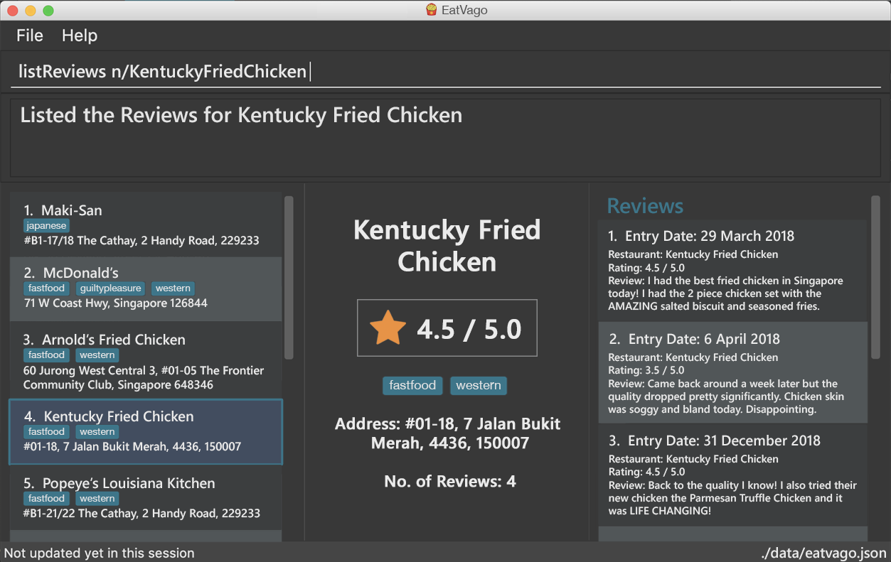

By: Team SE-EDU Since: Jun 2016 Licence: MIT
- 1. Introduction
- 2. Quick Start
- 3. Features
- 3.1. Viewing help :
help - 3.2. Adding a review:
add - 3.3. Editing a specified review :
edit - 3.4. Deleting a review :
delete - 3.5. Add a picture of the food to a review :
addImage - 3.6. Listing all reviews :
listReviews - 3.7. Adding a restaurant:
add - 3.8. Listing all restaurants :
listRestaurants - 3.9. Listing all restaurants not tried before : `listUnvisited'
- 3.10. Editing details of a restaurant :
editRestaurant - 3.11. Setting the cuisine of a restaurant :
setCuisine - 3.12. View your profile and usage statistics : 'view'
- 3.13. Exiting the program :
exit - 3.14. Saving the data
- 3.1. Viewing help :
- 4. FAQ
- 5. Command Summary
1. Introduction
The Food Diary (FD) is for those who prefer to use a desktop app for storing their personal food reviews and obtain food recommendations. More importantly, FD is optimized for those who prefer to work with a Command Line Interface (CLI) while still having the benefits of a Graphical User Interface (GUI). If you can type fast, FD can get your foodie tasks done faster than traditional GUI apps. Interested? Jump to the Section 2, “Quick Start” to get started. Enjoy!
2. Quick Start
-
Ensure you have Java version
9or later installed in your Computer. -
Download the latest
fooddiary.jarhere. -
Copy the file to the folder you want to use as the home folder for your Food Diary.
-
Double-click the file to start the app. The GUI should appear in a few seconds.
 -
Type the command in the command box and press Enter to execute it.
e.g. typinghelpand pressing Enter will open the help window. -
Some example commands you can try:
-
listRestaurants: lists all restaurants -
addReviewn/MCDONALDS r/4 m/delicious: adds a review to MCDONALDS with rating 4 with the comment "delicious" -
delete3: deletes the 3rd review shown in the index -
exit: exits the app
-
-
Refer to Section 3, “Features” for details of each command.
3. Features
Command Format
-
Words in
UPPER_CASEare the parameters to be supplied by the user e.g. inadd n/RESTAURANT_NAME,RESTAURANT_NAMEis a parameter which can be used asadd n/Burger King. -
Items in square brackets are optional.
-
Items with
… after them can be used multiple times including zero times e.g.[t/TAG]…can be used ast/friend,t/friend t/familyetc. -
Parameters can be in any order e.g. if the command specifies
n/RESTAURANT_NAME r/STAR_RATING,r/STAR_RATING n/RESTAURANT_NAMEis also acceptable.
3.1. Viewing help : help
Format: help
3.2. Adding a review: add
Adds a review to the Food Diary
Format: addReview n/RESTAURANT_NAME r/STAR_RATING m/COMMENT
Examples:
-
`addReview n/McDonalds r/4 m/Peach Pie was amazing'
3.3. Editing a specified review : edit
Edit selected fields in a specified entry.
Format: edit INDEX [r/STAR_RATING] [m/COMMENT]
Examples:
-
edit 1 r/3
Edits the rating of the 1st review to be 3. -
edit 2 m/Food isn’t the best
Edits the comment of the second review to "Food isn’t the best"
3.4. Deleting a review : delete
Deletes the review from the Food Diary.
Format: delete INDEX
Examples:
-
delete 2
Deletes the 2nd review in the Food Diary.
3.5. Add a picture of the food to a review : addImage
Adds a picture of the food to the review in the specified entry
Format: addPicture INDEX [f/FOOD_NAME] i/IMAGE_FILEPATH
Examples:
-
'addPicture 2 f/apple pie i/apple.jpg'
Adds a picture to the second review of an apple pie
3.6. Listing all reviews : listReviews
Shows a list of all reviews in the Food Diary.
Format: listReviews [n/RESTAURANT_NAME]
Examples:
-
'listReviews'
Return all the reviews -
'listReviews n/MACDONALDS'
Return all the reviews for Macdonalds.
3.7. Adding a restaurant: add
Add a restaurant that is not found in the current list of restaurants.
Format: add n/RESTAURANT_NAME a/ADDRESS c/CUISINE
Examples:
-
add n/Nana Thai food a/561 Clementi Road c/Thai
adds the restaurant Nana Thai food with address 561 Clementi Road and cuisine Thai food to the list
3.8. Listing all restaurants : listRestaurants
Shows a list of all restaurants in the Food Diary with an option to filter for certain property.
Format: listRestaurants [n/RESTAURANT_NAME] [a/ADDRESS] [c/CUISINE]
Examples:
-
'listRestaurants'
Return all the restaurants -
'listReviews n/Mc'
Return all the restaurants with name matching Mc.
3.9. Listing all restaurants not tried before : `listUnvisited'
List the restaurants in the database that have no reviews.
Format: listUnvisited
Examples:
-
'listUnvisited'
Return all the restaurants that you have not visited
3.10. Editing details of a restaurant : editRestaurant
Edit the details of a restaurant identified by the index number used in the listRestaurants.
Format: editRestaurant INDEX [n/RESTAURANT_NAME] [a/ADDRESS] [c/CUISINE]
Examples:
-
listRestaurants
`editRestaurant 2 n/MACS `
Change the name of the second restaurant in the list to MACS.
3.11. Setting the cuisine of a restaurant : setCuisine
Set the cuisine of a restaurant identified by the index number used in the listRestaurants.
Format: setCuisine INDEX [c/CUISINE]
Examples:
-
view
view
Displays your personalised profile and Food Diary statistics
3.12. View your profile and usage statistics : 'view'
Set the cuisine of a restaurant identified by the index number used in the listRestaurants.
Format: `view'
Examples:
view
'View personalised statistics for IAMAwesome. You have a total of 0 reviews and a total of 1 restaurants.'
3.13. Exiting the program : exit
Exits the program.
Format: exit
3.14. Saving the data
Food diary data are saved in the hard disk automatically after any command that changes the data.
There is no need to save manually.
4. FAQ
Q: How do I transfer my data to another Computer?
A: Install the app in the other computer and overwrite the empty data file it creates with the file that contains the data of your previous Food Diary folder.
5. Command Summary
-
AddReview
addReview n/RESTAURANT_NAME r/STAR_RATING m/COMMENT
e.g.addReview n/McDonalds r/4 m/Peach Pie was amazing -
Delete :
delete INDEX
e.g.delete 3 -
EditReview :
edit INDEX [r/STAR_RATING] [m/COMMENT
e.g.editReview 2 r/3 m/this is good -
ListRestaurants :
listRestaurants -
Help :
help